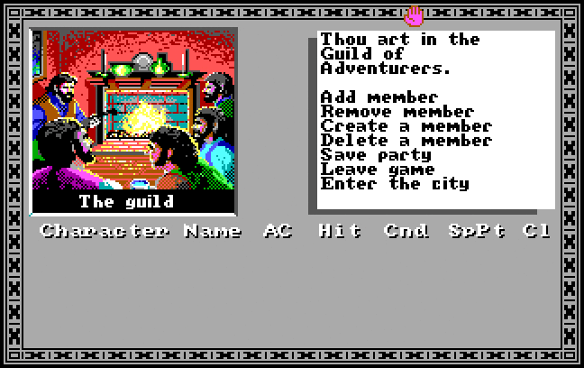

COMMODORE 64
THE BARD'S TALE (1985)
The Bard's Tale, ortaçağ temalı bir rol yapma oyunudur ve Commodore 64'ün en popüler RPG oyunlarından biridir. Oyuncular, farklı karakterlerle bir grup oluşturur ve Labirentler, zindanlar gibi yerlerde düşmanlarla savaşarak çeşitli görevleri yerine getirirler. Oyun, zengin bir hikaye ve keşif ögeleri sunuyor.
 OYUNU OYNAMAK İÇİN TIKLAYINIZMANİAC MANSİON (1987)
Maniac Mansion, grafik macera türünde bir oyundur ve oyunculara bir grup gençle gizemli bir malikaneyi keşfetme fırsatı sunar. Oyunun tarzı ve etkileşimli ortamları, çok sayıda farklı sonucu ve hikaye yolunu mümkün kılar. Bu oyun, LucasArts tarafından geliştirilen ilk "point-and-click" macera oyunlarından biridir.
OYUNU OYNAMAK İÇİN TIKLAYINIZPITSTOP 2 (1983)
Pitstop II, Commodore 64'ün en iyi yarış oyunlarından biridir. İki oyuncu arasında yarış yapılabilen bu oyun, yarış arabalarının pitstop (tamir) sırasında hızla lastik değiştirmesi ve yakıt alması gibi öğeleri içerir. Grafikler ve oynanış açısından oldukça gelişmişti ve hızla popülerlik kazandı.
 OYUNU OYNAMAK İÇİN TIKLAYINIZ
OYUNU OYNAMAK İÇİN TIKLAYINIZ